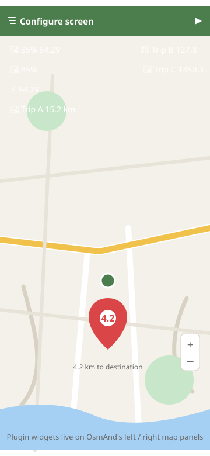

EUC Battery & Voltage
Combined display, e.g. “85% 84.2V” — the at-a-glance charge state with the raw voltage for pack sag awareness.
While you ride with EUC World connected, the plugin's widgets update live on the OsmAnd map — battery and voltage next to the route, trip distances under your ride — all configurable to the left or right panel.

Combined display, e.g. “85% 84.2V” — the at-a-glance charge state with the raw voltage for pack sag awareness.
Battery percentage only, for the minimal panel.
Voltage only, for technical monitoring and range experiments.
Each trip meter is its own widget. Use any subset — the arrangement is entirely up to you.
Widgets are positioned like any other OsmAnd widget: left or right map panel, any order.
Widgets refresh automatically from the background service while EUC data is available.
In OsmAnd: open the menu (hamburger) > Configure screen > scroll to the EUC widgets under external plugins, enable the ones you want, and place them on the left or right panel. They read the plugin's live service data — no extra configuration inside OsmAnd.
Long-press the launcher > Widgets > drag EUC Battery Status to the home screen. It shows battery %, voltage and speed, and updates in real time while the background service is running.
Under the hood: a foreground service polls EUC World's internal webservice (default 500 ms, configurable 100–2000 ms) and publishes the values to every surface at once — map widgets, the Auto display, the home screen widget and the phone app.